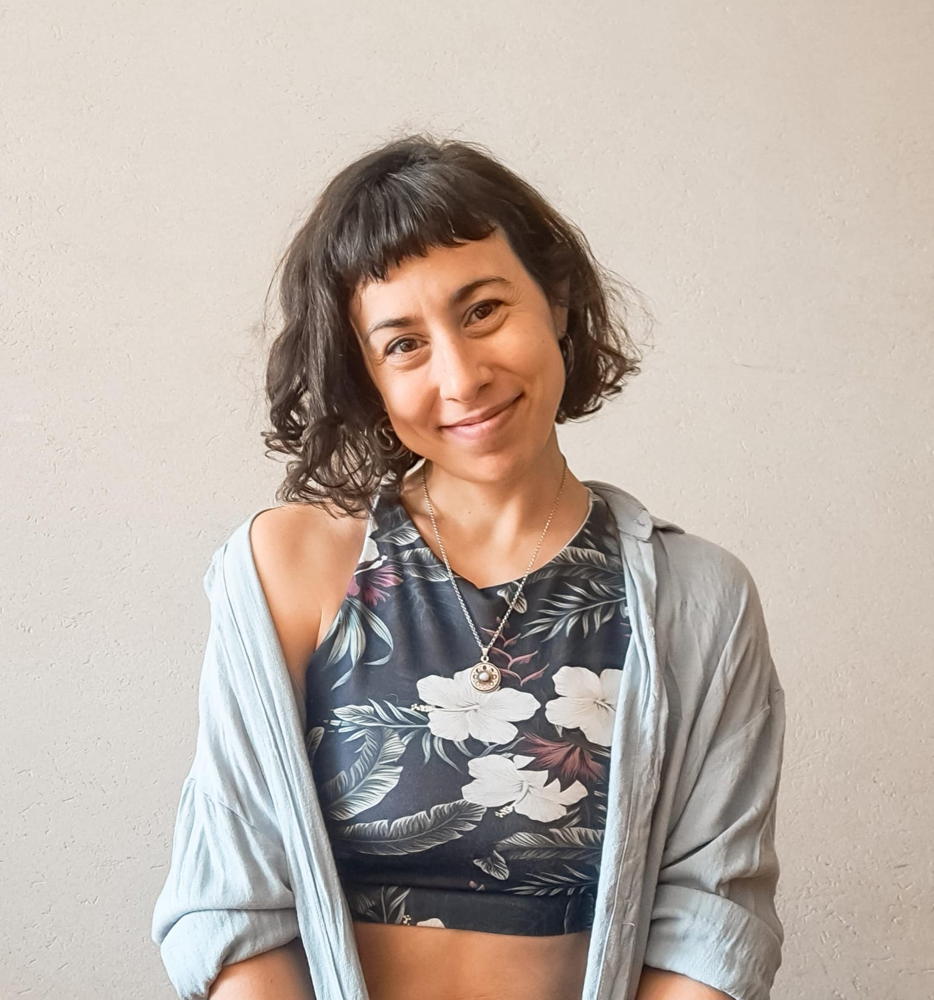
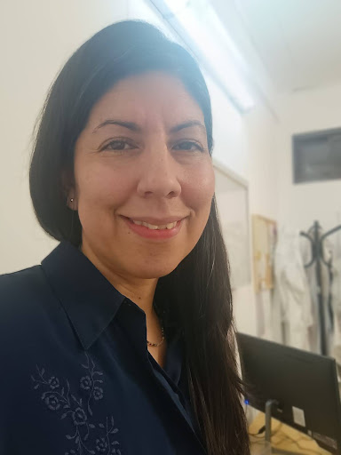
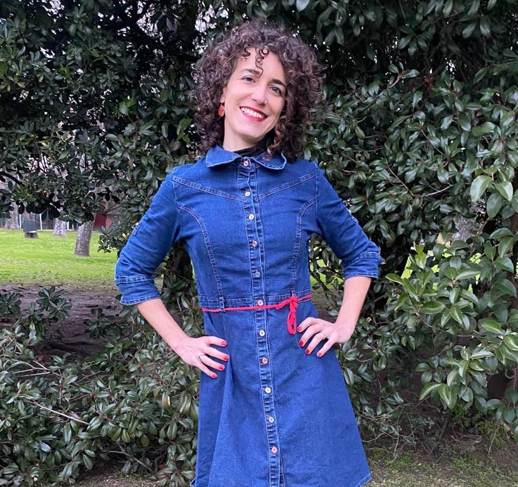
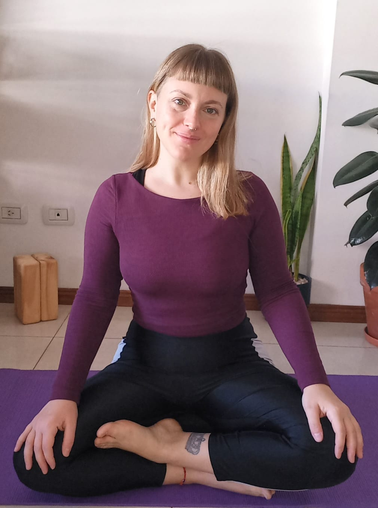
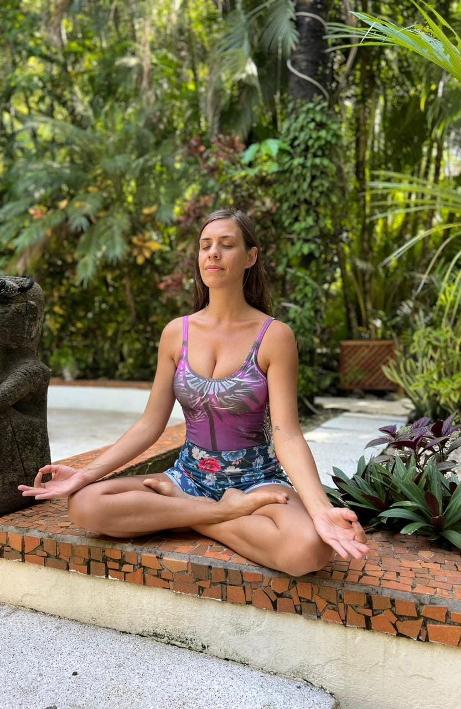
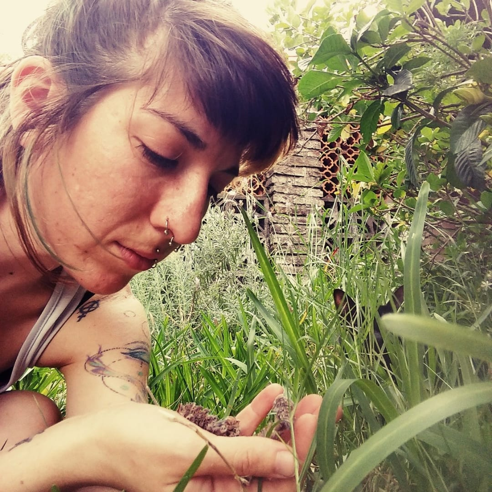
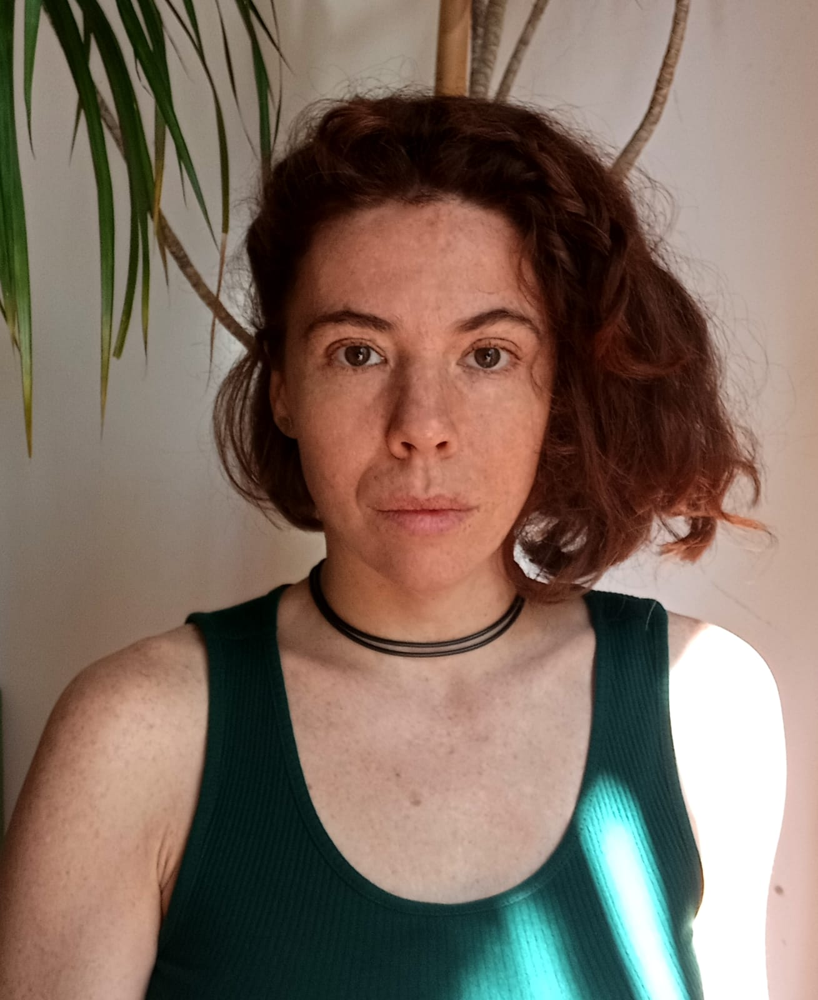
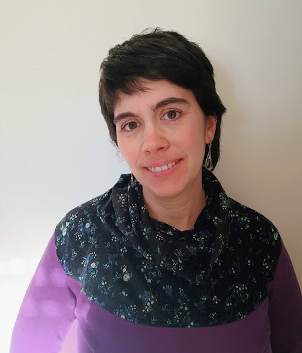
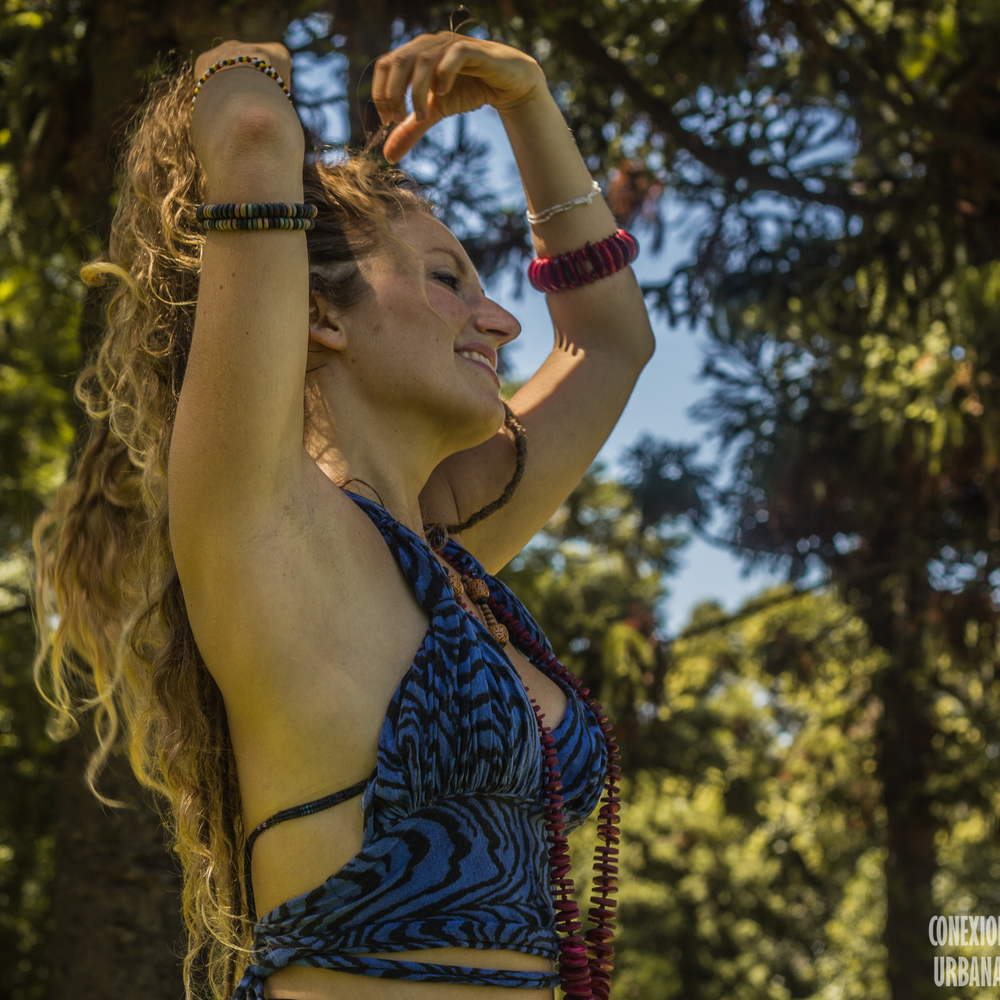

Quiénes somos
El equipo Casa Urdimbre
↓
El equipo Casa Urdimbre

Medicina Integrativa · Ayurveda · Gineco-Ecología
Soy Médica (UBA) con perspectiva integrativa y mi enfoque principal es el de la Medicina Ayurveda, con la que trabajo hace más de 5 años.
Ver consultorio →
Medicina General y Familiar · Salud Hormonal
Soy Médica graduada en la UBA, especializada en Medicina General y Familiar. Atiendo personas de todas las edades: infancia, adolescencia, adultez. Bienvenidas todas las identidades, las diversidades y los distintos marcos de creencias.
Ver consultorio →
Kinesiología · Pelviperineología · ATM
Me llamo Mariana, me dicen MARO. El movimiento siempre me generó curiosidad y a lo largo del tiempo fui capacitándome en diferentes disciplinas: Educación Física, Yoga, Danza, Acrobacia, Shiatsu, Tantra, Kinesiología.
Ver consultorio →
Hatha Yoga · Tantra
Mi nombre es Julieta Guerra. Hace varios años me sumergí en el estudio del cuerpo y su funcionamiento, y ese camino me llevó a explorar también mi mundo emocional y espiritual. Esa curiosidad me abrió las puertas del Tantra y del Yoga.
Ver clases →
Yoga Integral · Doula · Círculos de Mujeres
Soy Gise. Soy doula y hace unos años comparto mucho mi trabajo entre círculos de mujeres.
Ver clases →
Masaje Alquímico · Reiki · Registros Akáshicos · Yoga Vinyasa
Acompañante de procesos de Alquimia interna, actualización y recalibración del sistema energético. Profesor Reiki, Profesor de Registros Akáshicos, Masajista Alquímico, Masajista Ayurveda, Instructor Yoga Vinyasa, Terapeuta sacrouterino, Guía de meditación.
Ver sesiones →
Osteopatía
Me interesa sobre todo entender cuál es la raíz del conflicto en todo sentido, cuál es la semilla que va generando una ramificación de efectos que terminan en un impedimento para la expresión plena de la persona. Poder acompañar ese proceso que es absolutamente único en cada ser humano. Con la certeza de que somos seres sociales que necesitamos de otros y otras para sanar, mediante una escucha atenta, amorosa y comprometida.
Ver sesiones →
Fonoaudiología · Infancias · Neurodivergencias
Fonoaudióloga con más de 13 años de experiencia en clínica y educación, acompañando a las infancias y adolescencias y sus familias/cuidadoras-es en sus procesos de comunicación, lenguaje y habla desde una ética del cuidado.

Terapia Corporal · Danza · Yoga · Tantra · Registros Akáshicos
Terapeuta corporal, mentora del movimiento, bailarina, yoguini, docente. Con más de 15 años de experiencia en danzas de matriz afro y en la investigación del movimiento consciente.
Ver talleres →